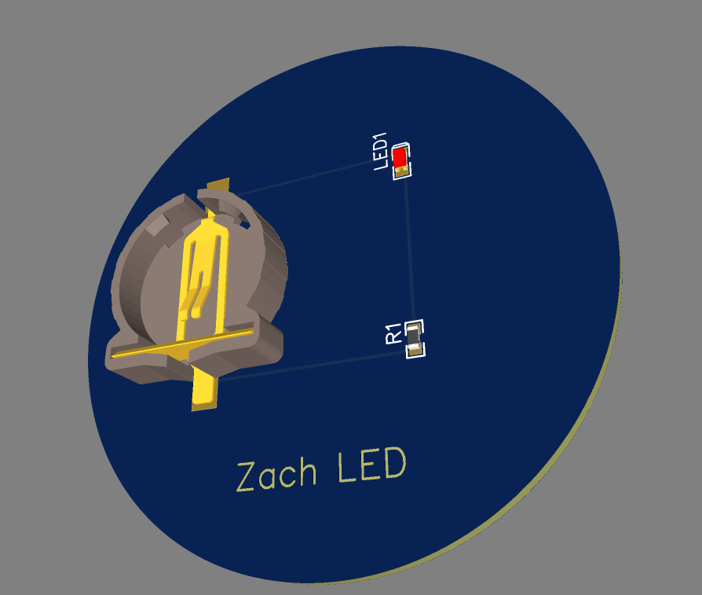

t1a06-easyEDA-zach.html
Use this link easyEDA Tutorial Video
Make a webpage about the experience

I made a easyEDA circuit bored and it was difficult for me to get a grasp on the mechanics and thought it was odd the standerd version had more items then the pro version
this was just very Uninteresting to me but it was nice to try it